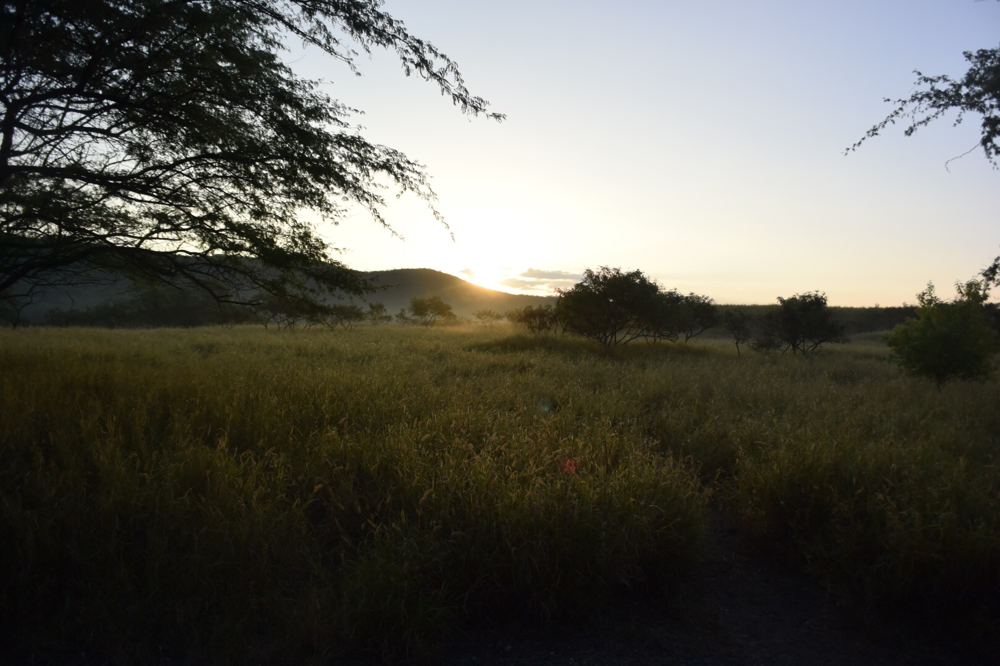

Hawaii
どこまでも続く青い空と海、降りそそぐ太陽 色彩豊かな大自然、人々の笑顔にあふれるアロハ・スピリット そして、永い時を経て受け継がれる豊かな歴史と文化 ハワイの6つの島には、数々の発見に出逢える個性豊かな表情がいっぱい ここでは、訪れる人々が出逢うことすべてが、驚きにあふれた発見 初めての人も、また帰ってきた人も「想像より、おもしろい。」 きっと新しい発見が待っています
どこまでも続く青い空と海、降りそそぐ太陽 色彩豊かな大自然、人々の笑顔にあふれるアロハ・スピリット そして、永い時を経て受け継がれる豊かな歴史と文化 ハワイの6つの島には、数々の発見に出逢える個性豊かな表情がいっぱい ここでは、訪れる人々が出逢うことすべてが、驚きにあふれた発見 初めての人も、また帰ってきた人も「想像より、おもしろい。」 きっと新しい発見が待っています
誰もが憧れるヨーロッパの地。日本からは距離があり、 旅費も高いことからなかなか行ける場所ではありませんね。 しかし、ヨーロッパには時間とお金をかけてまで行くべき絶景や 食べたい料理がたくさんあります！今回は旅行会社クラブツーリズムが 発表する添乗員のオススメランクングより、 初めてのヨーロッパ旅行にオススメする５つの国をランクングで ご紹介します。 初めてのヨーロッパ旅行の期待を裏切らない素敵な国ばかり！
誰もが憧れるヨーロッパの地。日本からは距離があり、 旅費も高いことからなかなか行ける場所ではありませんね。 しかし、ヨーロッパには時間とお金をかけてまで行くべき絶景や 食べたい料理がたくさんあります！今回は旅行会社クラブツーリズムが 発表する添乗員のオススメランクングより、 初めてのヨーロッパ旅行にオススメする５つの国をランクングで ご紹介します。 初めてのヨーロッパ旅行の期待を裏切らない素敵な国ばかり！